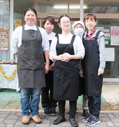

メニュー
ご紹介
令和元年5月1日より社会福祉法人草むら ぶるー夢として活動中です。
こんなことをしています
店頭販売、漬物、ジャム、メンバーさんの昼食、外販、外注の製造
特徴・方針
簡単な料理を身につけられる。和を持ってチームワークを大切にしたい。
責任者メッセージ
仕事としてとらえ、自信をもって自分を大事に達成感を持ちながら、家路に着いてほしい。
利用者の声
一生懸命考えて行動したら、認めてくれることが分かった。嬉しかった。 自立を促してくれる事業所です。
令和元年5月1日より社会福祉法人草むら ぶるー夢として活動中です。
店頭販売、漬物、ジャム、メンバーさんの昼食、外販、外注の製造
簡単な料理を身につけられる。和を持ってチームワークを大切にしたい。
仕事としてとらえ、自信をもって自分を大事に達成感を持ちながら、家路に着いてほしい。
一生懸命考えて行動したら、認めてくれることが分かった。嬉しかった。 自立を促してくれる事業所です。